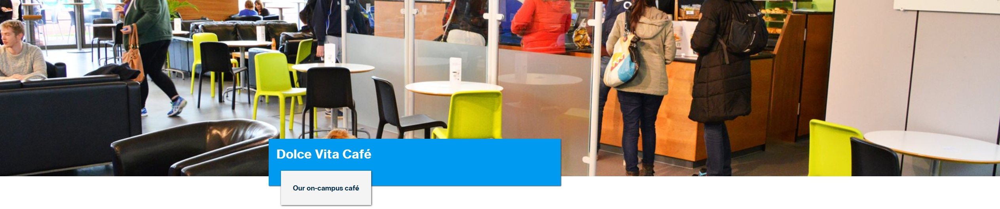
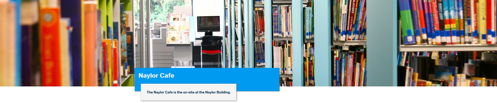
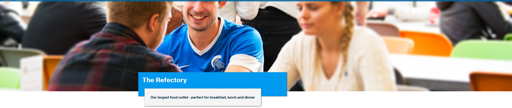

Food and Drinks Available
During your visit, you can enjoy delicious food and drinks from our various on-campus cafés and dining facilities. Here’s a closer look at what we have to offer:
1. Dolce Vita Café - Our On-Campus Café
The Dolce Vita Café features floor-to-ceiling windows that overlook the beautiful grounds and athletics track. This stylish café serves fully sustainable, triple-certified Smokin Bean Signature Coffee and offers a delightful range of seasonal frappés, iced drinks, exclusive snacks, soft drinks, sandwiches, and hot meals.
Location: Between the Main Campus Library and the Lounge Café Bar.
Facilities: There are suite computers with Wi-Fi access for your convenience, making it a great spot to meet up or catch up on work.
Payment: All catering outlets are cashless and accept only SimmPay Cashless payments (for students and staff) or debit/credit/smart payments at checkout.
Track and Trace: Information is collected at the outlet, facilitated by SimmPay.
Opening Times:
Weekdays: 8 AM - 5 PM*
Weekends: 8 AM - 4 PM*
(*Opening hours are subject to change.)
2. Naylor Café
The Naylor Café is located off-campus in the Naylor Building, just a short seven-minute walk from the main campus. It proudly serves Smokin Bean Coffee, iced drinks, and a range of sandwiches, snacks, and hot meals.
Address: 99 Waldegrave Road, Teddington, TW11 8LA.
Payment: This café is also cashless and accepts SimmPay Cashless payments or debit/credit/smart payments at checkout.
Opening Hours:
Weekdays: 9 AM - 4 PM
Weekends: Closed
(Note: The Naylor Building Café is closed during vacation periods, but a vending service for coffee, snacks, and drinks is available when the café is not open.)
3. The Refectory - Our Largest Food Outlet
The Refectory is the largest food outlet on campus, perfect for breakfast, lunch, and dinner. It is open seven days a week, offering freshly cooked meals daily alongside a wide selection of sandwiches, snacks, cold/hot drinks, and essential grocery items.
Meal Plan: All room prices include 14 meals per week during term time, with meals taken as seven evening meals, five breakfasts, and brunch on weekends. The meal plan operates on a point system that calculates the amount of food students can have per meal.
Allergen Information: An extensive menu caters to various dietary needs, with food ingredient and allergen information readily available. Current students can find more details on SIMMSpace or in the Residents' Handbook.
Opening Times:
Weekdays:
Breakfast: 8 AM - 10 AM
Lunch: 12 PM - 2 PM
Dinner: 4:30 PM - 7 PM
Weekends:
Brunch: 10:30 AM - 12:30 PM
Dinner: 4:30 PM - 6:30 PM